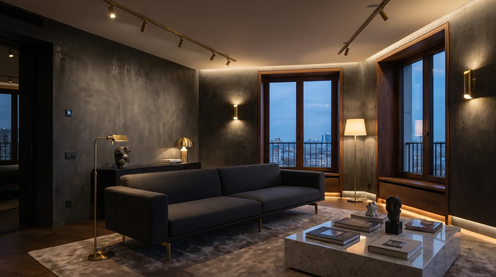
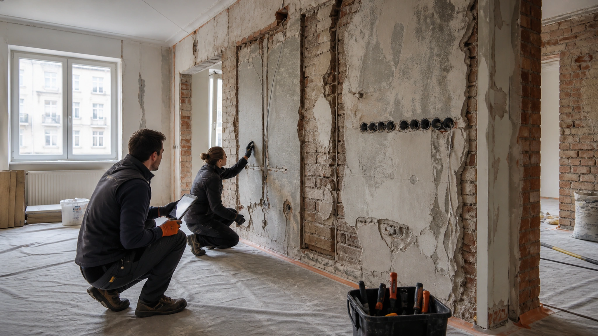
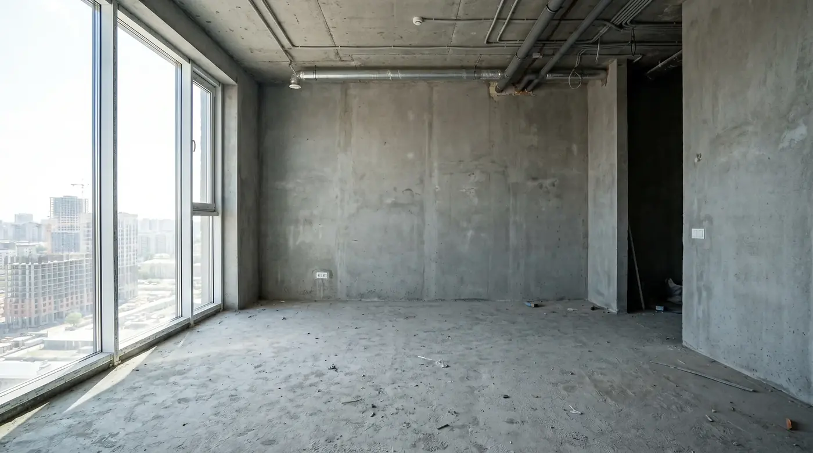

198–246 tys. zł
Dla 60 m², standard funkcjonalny, 1 łazienka.
- zawiera robociznę i typowy pakiet materiałów
- nie zawiera mebli ruchomych i sprzętu AGD
- stan instalacji potwierdzamy po inwentaryzacji
Projekt, kosztorys, kolejność prac i odbiory zapisane tak, żeby było wiadomo: co robimy, kto odpowiada i co może zmienić budżet.
Zbuduj zakres orientacyjny
Kalkulator pokazuje orientacyjny przedział dla portfolio demo. Nie jest ofertą ani kosztorysem wykonawczym.
Dla 60 m², standard funkcjonalny, 1 łazienka.
Każdy pakiet zaczyna się od pozycji włączonych, wyłączonych oraz takich, które można wycenić dopiero po odkrywkach.
koordynacja branż, typowe prace wykończeniowe, odbiory etapowe
wymiana instalacji, naprawa podłoży, korekta geometrii
meble ruchome, AGD, opłaty administracyjne i decyzje formalne
Ukryte prace odbieramy, zanim znikną pod kolejną warstwą.
pomiary, instalacje, ryzyka i protokół
STARTelektryka, hydraulika, hydroizolacja
ODBIÓRściany, sufity, poziomy i osie
ODBIÓRokładziny, stolarka, malowanie
ODBIÓRlista usterek, instrukcje i dokumentacja
PROTOKÓŁ
STAN ODKRYTY / CONCEPTPo odsłonięciu warstw aktualizujemy protokół: co zgadza się z założeniami, co wymaga projektu zamiennego i które decyzje wpływają na koszt.
ELEKTRYKAtrasy · punkty · zabezpieczeniaprotokół pomiarów wymagany
WODAprowadzenie · próba ciśnieniowazdjęcia przed zabudową
WENTYLACJAdrożność · nawiew · podcięciaweryfikacja z projektem
OGRZEWANIEprzebieg · sterowanie · testinstrukcja przy przekazaniu
Spadki, naroża, przejścia instalacyjne i hydroizolację zapisujemy przed ułożeniem okładziny.
Przesuń granicę, ale sprawdź też, co faktycznie zostało wykonane.

Próbka, karta techniczna, partia i sposób montażu tworzą jeden zapis. Wizualizacja nie zastępuje decyzji materiałowej.
kolor · stopień połysku · przygotowanie podłoża
DO AKCEPTACJIformat · fuga · układ · narożniki
PRÓBKAselekcja · wykończenie · kierunek · dylatacje
MOCKUPHarmonogram demonstracyjny. Realne terminy powstają po projekcie, dostępności ekip i potwierdzeniu dostaw.
Każda decyzja po akceptacji zakresu otrzymuje numer, wpływ na koszt, wpływ na termin i osobę zatwierdzającą.
Plan odpowiedzialności odróżnia koordynację od akceptacji i pokazuje, kiedy potrzebny jest specjalista branżowy.
ARCHLINEkoordynacja, zapisy, kontrola zakresu
WŁAŚCICIELbudżet, materiały, zmiany funkcjonalne
PROJEKTANTdokumentacja i odpowiedzi projektowe
BRANŻYSTApomiary, próby i odbiory specjalistyczne
Odpowiedzi opisują logikę koncepcji, nie stanowią warunków usługi.
Nie. Pokazuje orientacyjny przedział na podstawie trzech założeń i nie uwzględnia stanu odkrytego, projektu ani cen dostawców.
Po udokumentowanej zmianie zakresu, odkryciu stanu niezgodnego z założeniami lub aktualizacji potwierdzonych cen i terminów.
Bo instalacji i hydroizolacji nie można rzetelnie ocenić po zamknięciu kolejnych warstw.
Rzut, lokalizację, etap inwestycji, zdjęcia stanu i priorytety budżetowe. Formularz poniżej działa wyłącznie lokalnie.
Formularz lokalny — niczego nie wysyła.